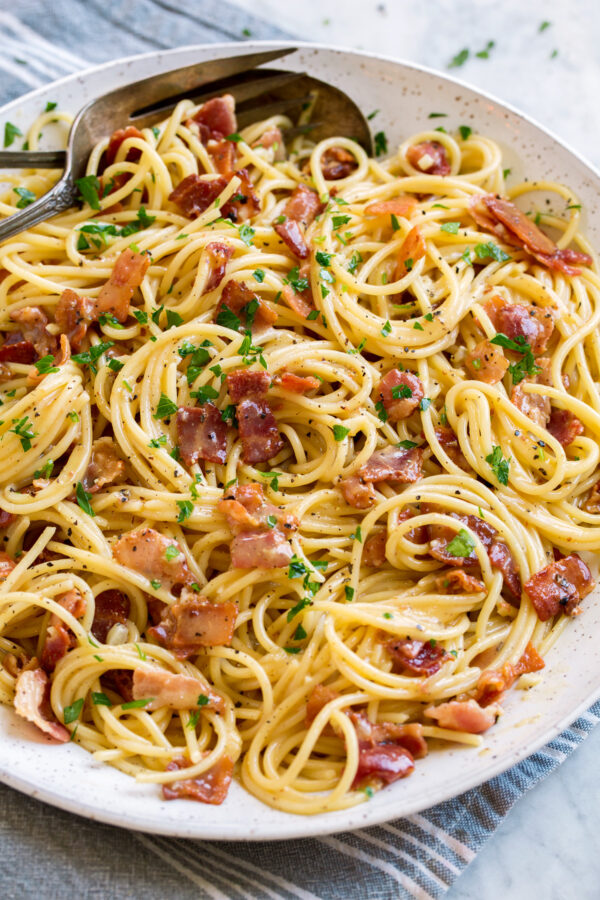

|  |
|
Salt That Water!:
One of the biggest mistakes people make when cooking pasta is that they don't season their pot of water nearly enough. Don't just add a pinch. If you're cooking a full pound of pasta, add a full tablespoon. This will make your spaghetti (or fettuccine or whatever you're using) actually taste like something.
Save some pasta water.:
You might need to loosen your sauce later on; you might not. Just in case, save some starchy cooking water. If after you add the eggs and Parm it doesn't seem creamy enough, gradually stir in some cooking water.
You don't need cream.:
To make an authentic carbonara sauce, you need eggs and Parmesan. Repeat, YOU DO NOT NEED HEAVY CREAM. As much as we love cream, it'll just overpower everything. The combination of eggs + Parm when whisked together makes for a creamy, silky sauce.
You can use pancetta or guanciale instead of bacon.:
We always keep bacon in our fridge, so that's what we used here. But if you have access to pancetta (cured pork belly) or guanciale (cured pork jowl), definitely swap out the bacon for either. The flavor will be incredible no matter which you choose.
Toss the pasta in the bacon or pancetta fat.:
Once you cook the bacon (or pancetta), keep all the fat in the pan and toss your pasta in it, coating every piece of spaghetti with a touch of smokiness before moving to the next step.
Turn off the heat when you add the eggs.:
Adding the eggs off the heat is important to prevent them from scrambling, but super important for creating a luscious sauce. After tossing the pasta in the bacon fat, remove your skillet from the heat and stir in the egg and Parmesan mixture. And stir vigorously! The eggs will cook from the residual heat of the pan, the bacon fat, and the hot pasta.